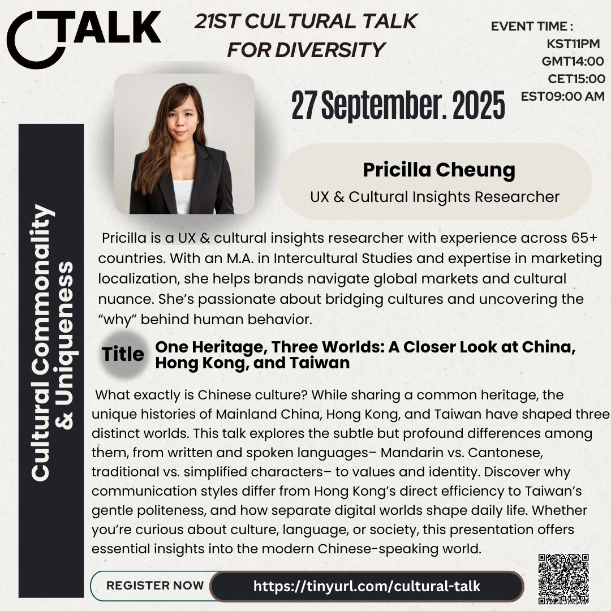
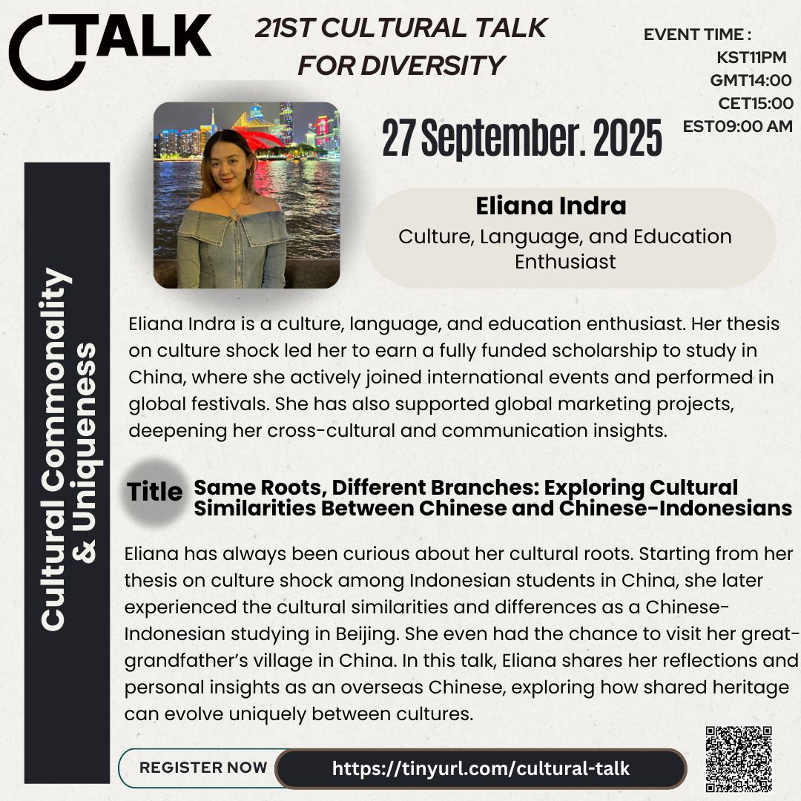

21st Cultural Talk For Diversity
Theme: Cultural Commonality & Uniqueness

Event Details
Date: 27 September, 2025
Time: 23:00 (KST) / 14:00 (GMT) / 16:00 (CEST) / 10:00 (EDT) / 07:00 (PDT) / 18:00 (GST)
This event has already taken place and is now part of our archive.
Conference Overview
This session explored how cultures can be deeply interconnected while still developing unique identities, values, and communication styles. Through personal reflection and regional comparison, the event invited participants to think about how shared heritage, migration, and lived experience shape both common ground and cultural distinction.

Eliana Indra
Culture, Language, and Education Enthusiast
Eliana Indra is a culture, language, and education enthusiast whose academic work on culture shock led her to study in China on a fully funded scholarship. Through international events, study abroad, and personal exploration of her roots, she has developed a strong interest in how culture shapes identity and belonging.
Topic: Same Roots, Different Branches: Exploring Cultural Similarities Between Chinese and Chinese-Indonesians
Drawing from both research and personal experience, Eliana reflected on the similarities and differences between Chinese culture and Chinese-Indonesian identity. Her talk examined how shared heritage can evolve in distinct ways across place, history, and community.

Pricilla Cheung
UX & Cultural Insights Researcher
Pricilla is a UX and cultural insights researcher with experience across more than 65 countries. With a background in intercultural studies and marketing localization, she helps people and organizations better understand the cultural nuance behind communication, behavior, and identity.
Topic: One Heritage, Three Worlds: A Closer Look at China, Hong Kong, and Taiwan
This talk explored how Mainland China, Hong Kong, and Taiwan share historical roots while developing distinct languages, identities, values, and communication styles. It offered a closer look at how common heritage can branch into very different cultural worlds.
Related Coverage
You can explore additional posts and news coverage related to this conference below.